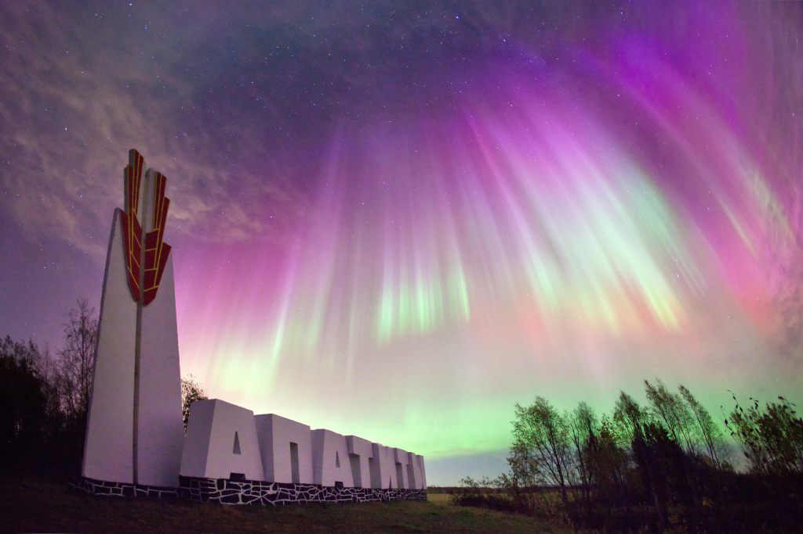
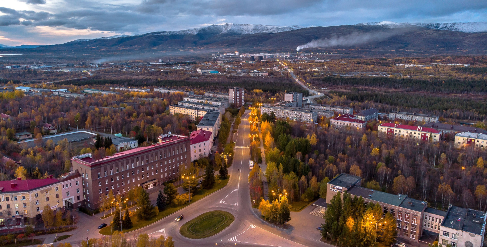
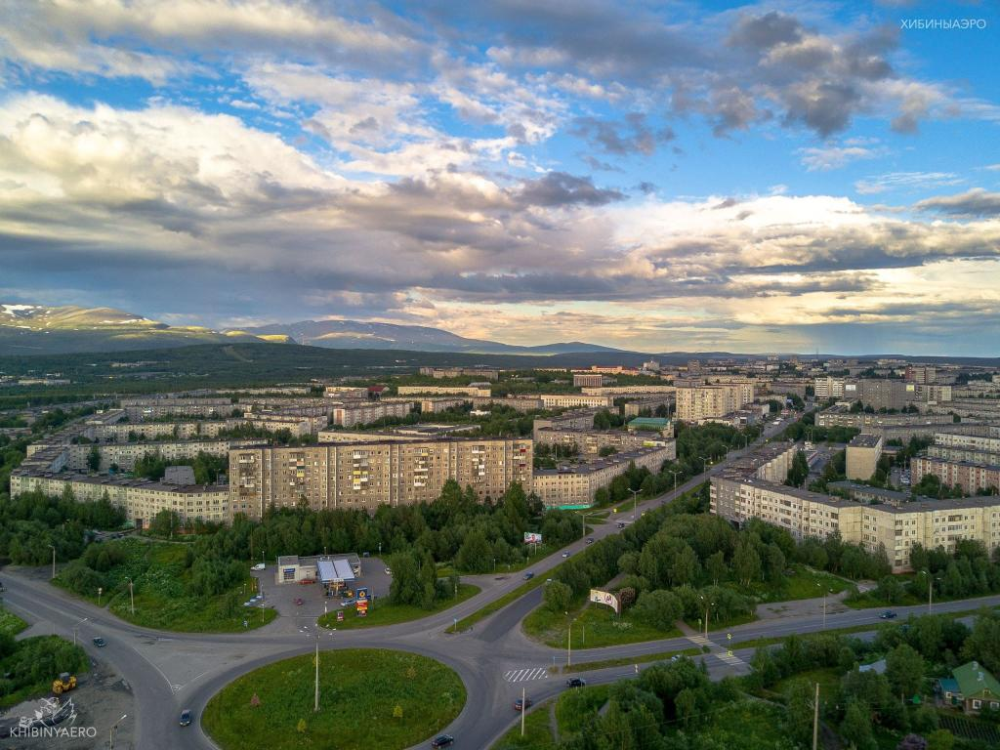
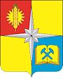
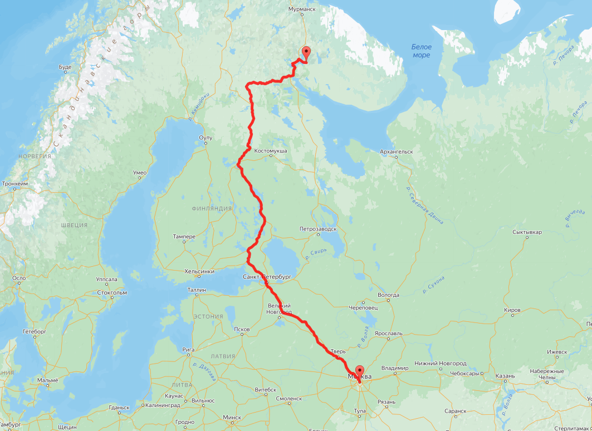

Апатиты
Апати́ты — город в Мурманской области России. Расположен на Кольском полуострове, между озером Имандра и горным массивом Хибины на левом берегу реки Белая.
Население — 48 748 чел. (2023). Пятый по величине город в мире за Северным полярным кругом.
Зима
Осень
Лето
Северное сияние

История города
Герб
Герб внесён в Государственный геральдический регистр Российской Федерации под регистрационным номером 8734.
Герб муниципального образования город Апатиты с подведомственной территорией Мурманской области Российской Федерации — является официальным символом муниципального образования город Апатиты с подведомственной территорией Мурманской области как муниципального образования.
Апатиты-Москва
Расстояние от Апатитов до Москвы
Расстояние Апатиты - Москва по трассе составляет 1808 км, а по прямой - 1332 км. Расчетное время преодоления расстояния между городами Апатиты и Москва на машине составляет 20:35.
